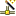

Purpose
The Remote System Explorer has settings that you can customize in a preference page. The name of the category is Remote Systems and it appears in the tree view of the Preferences window.| Option | Description | Default |
| Default System Type | Defines the default system type that will be used when creating a new connection. | none |
| Default user ID for each system type | Specifies a default user ID for a non-local system type. If you do not set the default user ID at the connection level, then the User ID that you specify here will be used. Note: Changing the user ID on the Preferences dialog affects all connections and subsystems that inherit it. | Off |
| Show connection names prefixed by profile name | Select this to display connection names in the Remote System Explorer tree view as profile.connection. | Off |
| Show filter pools in Remote Systems view | Select this to show filter pools when expanding a subsystem. When this is not selected, expanding a subsystem will display the filters. | Off |
| Show "New Connection" prompt in Remote Systems view | The  New Connection option is displayed in the Remote Systems view so that you can create a new connection. | On |
| Re-open Remote Systems view to previous state | Select this to automatically open previously expanded connections on start-up. | On |
| Cascade user actions by profile | The Work With > User Actions menu will cascade according to active profile. | Off |